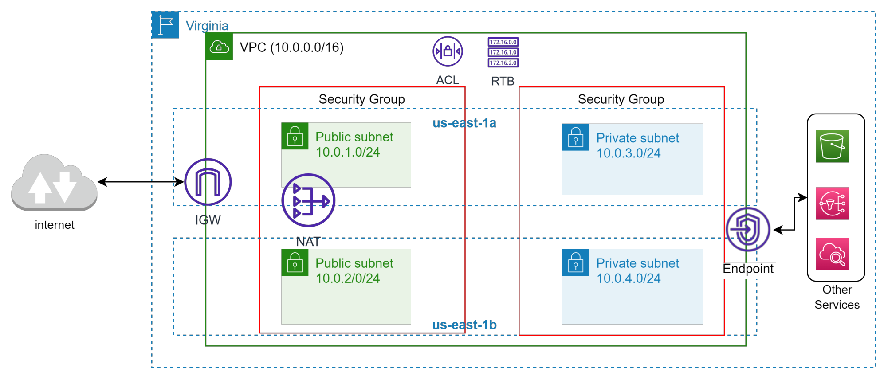
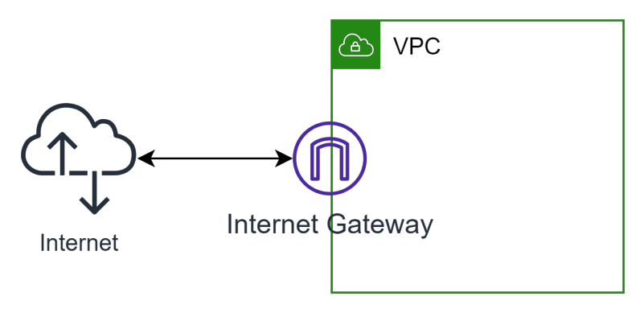
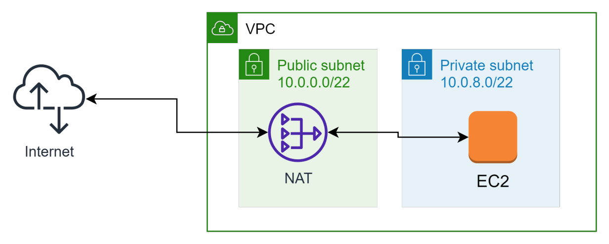
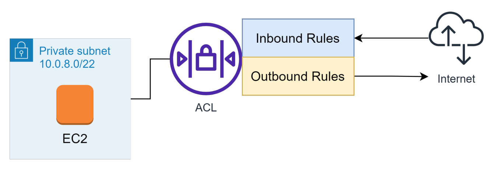
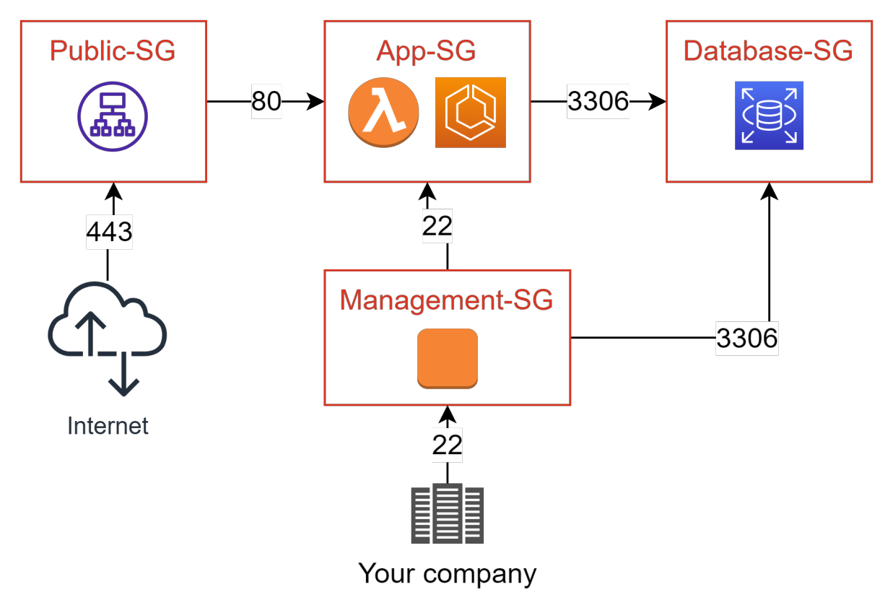
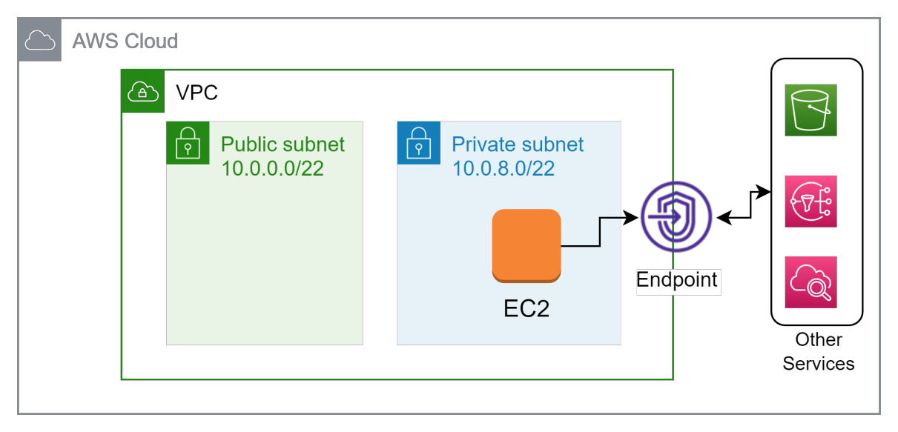
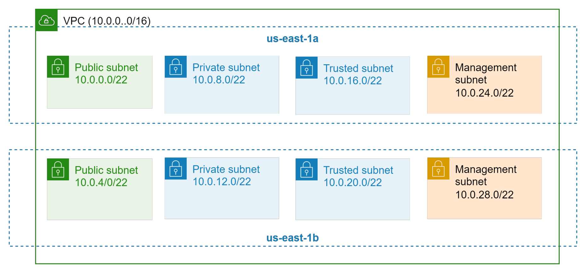
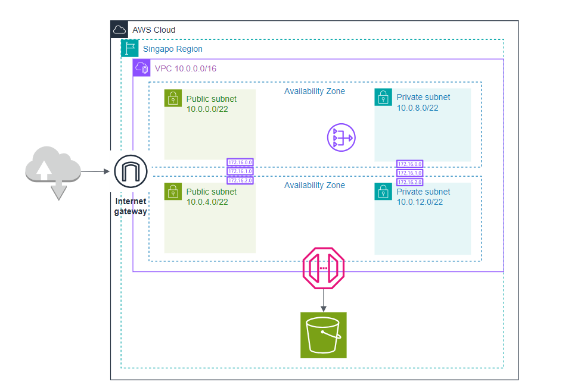
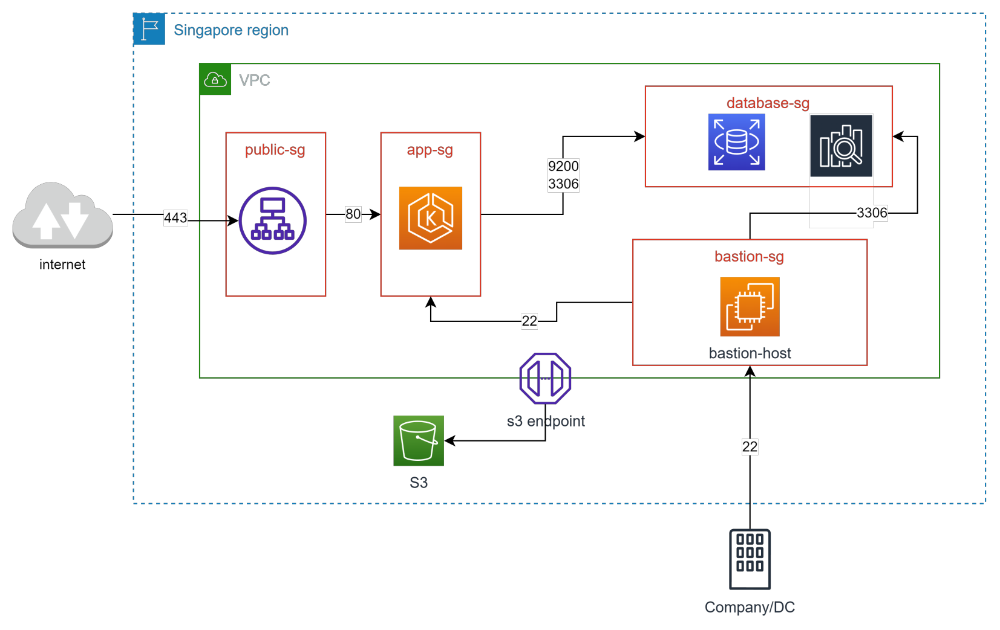

Networking service - VPC, Peering, Endpoint
- What?
- Các thành phần cơ bản của VPC
- Internet Gateway
- NAT Gateway
- Network Access Control List (ACL)
- Security Group
- Route Table
- VPC Endpoint
- Định nghĩa VPC
- Phân chia subnet?
- Pricing of VPC
- Thiết kế VPC Đơn giản
What?
- Viêt tắt của Virtual Private Cloud
- Là một service cho phép người dùng tạo một mạng ảo (virtual network) và control toàn bộ network in/out của mạng đó.
- VPC tương đối giống với network ở datacenter truyền thống tuy nhiên các khái niệm đã được AWS đơn giản hoá giúp người dùng dễ tiếp cận.
Các thành phần cơ bản của VPC
- VPC: Một mạng ảo được tạo ra ở cấp độ region.
- Subnet: Một dải IP được định nghĩa nằm trong VPC. Mỗi subnet phải được quyết định Availability Zone tại thời điểm tạo ra.
- IP Address: IP V4 hoặc V6 được cấp phát. Có 2 loại là Public IP và Private IP.
- Routing: xác định traffic sẽ được điều hướng đi đâu trong mạng.
- Elastic IP: IP được cấp phát riêng, có thể access từ internet (public), không bị thu hồi khi instance start -> stop. Nếu không dùng, hoặc được gán cho ec2 đang stop => tính phí. Vì IP này là giới hạn trên global
- Security Group: Đóng vai trò như một firewall ở cấp độ instance, định nghĩa traffic được đi vào /đi ra.
- Network Access Controll List (ACL): được apply ở cấp độ subnet, tương tự như security group nhưng có rule Deny và các rule được đánh độ ưu tiên. Mặc định khi tạo VPC sẽ có 1 ACL được apply cho toàn bộ subnet trong VPC (mở all traffic không chặn gì cả).
- VPC Flow Log: capture các thông tin di chuyển của traffic trong network.
- VPN Connection: kết nối VPC trên AWS với hệ thống dưới On-premise.
- Elastic Network Interface: đóng vai trò như 1 card mạng ảo.
- Internet Gateway: Kết nối VPC với Internet, là cổng vào từ internet tới các thành phần trong VPC.
- NAT Gateway: dịch vụ NAT của AWS cho phép các thành phần bên trong kết nối tới internet nhưng không cho bên ngoài kết nối tới.
- VPC Endpoint: kênh kết nối private giúp kết nối tới các services khác của AWS mà không thông qua internet.
- Peering connection: kênh kết nối giữa 2 VPC.
- Transit gateways: đóng vai trò như 1 hub đứng giữa các VPCs, VPN Connection, Direct Connect.

Internet Gateway
- Là cửa ngõ để truy cập các thành phần trong VPC.
- Nếu VPC không được gắn Internet Gateway thì không thể kết nối SSH tới instance kể cả instance đó có được gắn public IP. Mặc định default-vpc do AWS tạo sẵn đã có gắn Internet Gateway. 
NAT Gateway
- Giúp cho các instance trong Private Subnet có thể đi ra internet mà không cần tới public IP.
- Giúp tăng cường bảo mật cho các resource cần private (App, DB). 
Network Access Control List (ACL)
- Control network in/out đối với subnet được associate
- Mỗi rule sẽ có các thông số:
- Priority
- Allow/Deny
- Protocol
- Port range
- Source IP / Destination IP
- Default ACL sẽ allow all.
- Sử dụng quá nhiều rule của ACL sẽ làm giảm performance.
- Rule của ACL là stateless. 
Security Group
- Thường được dùng để gom nhóm các resource có chung network setting (in/out, protocol, port). Khi thiết kế cần quan tâm tới tính tái sử dụng, dễ quản lý.
- Source của một Security Group có thể là CIDR(Classless Inter-Domain Routing - Ex: 192.168.1.0/24) hoặc id của một Security Group khác.
- Rule của Security Group là stateful và không có deny rule. Statefull có nghĩa là nếu Inbound cho phép traffic đi vào thì khi request tới sẽ nhận được response mà không cần explicit allow Outbound. Khác với Network ACL 
Route Table
- Định tuyến traffic trong subnet hoặc gateway sẽ được điều hướng đi đâu
- Route Table sẽ quyết định một subnet sẽ là Private hay Public.
- Subnet được gọi là Public khi có route đi tới Internet Gateway và ngược lại.
- Một Subnet chỉ có thể associate 1 route table.
- Default VPC do AWS tạo sẵn sẽ có 1 main route table associate với toàn bộ subnet.
VPC Endpoint
- Giúp các resource trong VPC có thể kết nối tới các dịch vụ khác của AWS thông qua private connection.
- Công dụng: secure, tăng tốc độ.
- Có 2 loại endpoint là Gateway Endpoint (S3, Dynamodb) và Interface Endpoint (SQS, CloudWatch,...)
- Endpoint có thể được cấu hình Security Group để hạn chế truy cập. 
Định nghĩa VPC
- VPC được định nghĩa bằng 1 dải CIDR.
- AWS cho recommend chọn 1 trong 3 dải CIDR sau (theo chuẩn RFC-1918)
- 192.168.0.0 – 192.168.255.255. Ex: 192.168.0.0/20
- 10.0.0.0 – 10.255.255.255. Ex: 10.0.0.0/16
- 172.16.0.0 – 172.31.255.255. Ex: 172.31.0.0/16
- Việc định nghĩa CIDR của IP cần tuân thủ một số tiêu chí sau:
- Cover được số lượng IP private cần cấp phát trong tương lai.
- Tránh overlap với các hệ thống sẵn có (kể cả on-premise) nếu không sẽ không thể peering.
Phân chia subnet?
- Subnet được coi như một thành phần con của VPC.
- Một VPC có thể chứa nhiều subnet không overlap nhau.
- Khi tạo subnet phải chọn Availability Zone.
- Chọn CIDR cho subnet cần lưu ý:
- Số lượng IP cho các resource cần cấp phát (EC2, Container, Lambda,...) VD: subnet 10.0.1.0/24 sẽ có 256 IP trừ đi 5 reserve ip của AWS -> 251 IP khả dụng.
- Số lượng subnet dự tính sẽ tạo trong tương lai.
- Đặt số sao cho dễ quản lý.
Pricing of VPC
Tool CIDR hoặc tính tay cũng không phải là vấn đề
Giả sử VPC sử dụng CIDR /16 và Subnet sử dụng CIDR /22 ta sẽ có sơ đồ sau:

- Việc phân chia bao nhiêu loại subnet phụ thuộc vào yêu cầu về độc lập network cho các component
- Các subnet không sử dụng hết IP của VPC nên trong tương lai vẫn có thể mở rộng tạo thêm subnet nếu cần
VPC là một dịch vụ miễn phí tuy nhiên user phải trả phí cho các resource liên quan:
- NAT Gateway: tính tiền theo giờ, ~$45/month/Gateway.
- VPC Endpoint: Tính tiền theo giờ và lưu lượng traffic.
- VPN Connection: tính tiền theo giờ.
- Elastic IP: Tính tiền theo giờ x số IP.
- Traffic: data đi ra ngoài internet.
- ...and more
Thiết kế VPC Đơn giản
- Thiết kế một VPC như sau (sử dụng drawio hoặc Powerpoint)
- VPC CIDR: 10.0.0.0/16
- Có 2 loại subnet Public, Private. Mỗi subnet chứa ít nhất 1000 IPs.
- Mỗi loại subnets nằm ở ít nhất 2 AZ.
- Có 1 Internet Gateway, cấu hình route table tới Internet Gateway.
- Có 1 NAT Gateway, cấu hình route table tới NAT Gateway

- Thiết kế security group cho 4 nhóm đối tượng:
- Application Load Balancer (ALB): expose port HTTPS 443.
- App Server cho phép port 80 từ ALB, 22 từ Bastion server.
- Database Server sử dụng MySQL sd port: 3306. Elastic Search sd port: 9200.
- Bastion Server: SSH port 22 từ IP công ty.
- Thiết kế VPC Endpoint cho S3 service.
